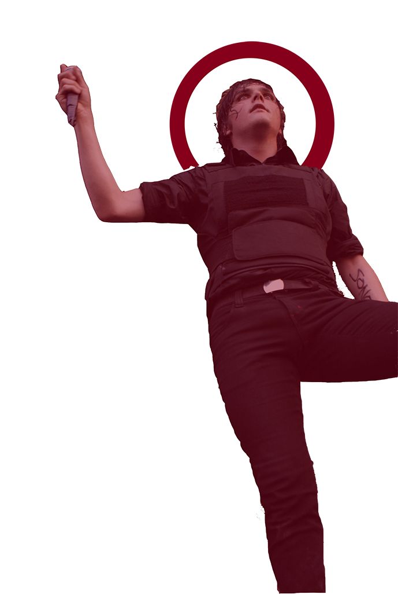
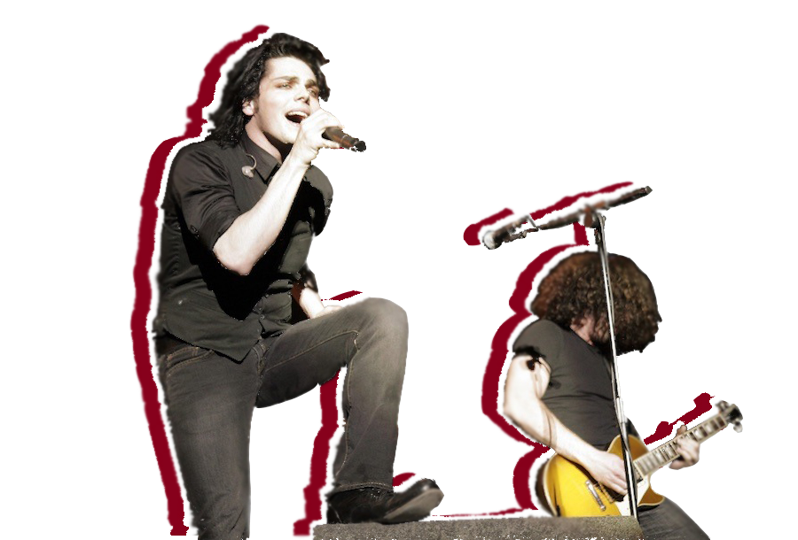

The band was formed by frontman Gerard Way and drummer Matt Pelissier in Newark, New Jersey, soon after the September 11 attacks. Witnessing the World Trade Center towers fall influenced Way's life to the extent that he decided to start a band. Way wrote the song "Skylines and Turnstiles" to express his feelings about September 11 and shortly thereafter, Ray Toro was recruited as the band's guitarist because at the time Way could not sing and play the guitar simultaneously. The name of the band was suggested by bass guitarist Mikey Way, younger brother of Gerard, who was working in a Barnes & Noble when he was struck by the title of a book by Irvine Welsh named Ecstasy: Three Tales of Chemical Romance.
The first recording sessions were undertakenin Pelissier's attic, where the songs "Our Lady of Sorrows" and "Cubicles" were recorded. The band refers to those sessions as The Attic Demos. After hearing the demo and dropping out of college, Mikey Way decided to join the band. While with Eyeball Records, the band met Frank Iero, the lead vocalist and guitarist for Pencey Prep. Following Pencey Prep's split in 2002, Iero became a member of My Chemical Romance, just days prior to the recording of the band's debut album. They recorded their debut album, I Brought You My Bullets, You Brought Me Your Love, just three months after the formation of the band and released it in 2002 through Eyeball Records. My Chemical Romance offered free downloads through PureVolume and the social networking website MySpace, where they gained an initial fan base.
In 2003, the band signed a deal with Reprise Records. Following a tour with Avenged Sevenfold, the band began working on their second album, which was entitled Three Cheers for Sweet Revenge, which was released on June 8, 2004. A month after the album's release, the band replaced Matt Pelissier with Bob Bryar. The band released four singles from the album: "I'm Not Okay (I Promise)", "Thank You for the Venom", "Helena", and "The Ghost of You". The album went platinum in just over a year of its release.
At the beginning of 2005, the band was featured on the first Taste of Chaos tour along with The Used and Killswitch Engage. The band also was the opening act for Green Day on their American Idiot tour. They then co-headlined Warped Tour 2005 with Fall Out Boy and co-headlined a tour with Alkaline Trio and Reggie and the Full Effect around the US. That same year, My Chemical Romance collaborated with The Used for a cover of the Queen and David Bowie classic, "Under Pressure", which was released as a benefit single for tsunami relief on iTunes and other Internet outlets.
In March 2006, the album Life on the Murder Scene was released, incorporating a CD and two DVDs. It included one documentary DVD chronicling the band's history, and a second DVD with music videos, the making of their videos and live performances. An unauthorized biography DVD Things That Make You Go MMM! was also released in June 2006. The DVD does not actually feature any My Chemical Romance music clips or performances but contains interviews with those who knew the band before much of their fame. A biography titled Something Incredible This Way Comes was also released, written by Paul Stenning and published in 2006.
My Chemical Romance started recording their third studio album on April 10, 2006 with Rob Cavallo, producer of many of Green Day's albums. It was originally thought to be titled The Rise and Fall of My Chemical Romance (in reference to The Rise and Fall of Ziggy Stardust and the Spiders from Mars by David Bowie), but in an interview with Kerrang! magazine, Gerard Way suggested this was just the album's working title, stating "It was never the title of the album, more a spoof, or joke."
On August 22, 2006, the band played a special one-off show at the 1,800-capacity London Hammersmith Palais. The show sold out in 15 minutes, prompting tickets to be re-sold on eBay well over the tickets' face value. The name of the album was announced and 20 people dressed in black capes with their faces obscured paraded around the Hammersmith venue, followed by a large group of fans and street team members with signs saying "The Black Parade". Later during the show, the album title and the UK release date were confirmed. Before the band took the stage, it was announced that My Chemical Romance was unable to play, but they would be replaced by The Black Parade. After initial crowd hostility, it became clear the band was simply performing under a pseudonym in keeping with the theme of the album. Since then, the band would often perform under the alias "The Black Parade", wearing the costumes seen in the album's music videos. Gerard Way would adopt the persona of the leader of the marching band, The Black Parade, and vary his behavior and performance accordingly.
"Welcome to the Black Parade" was released as a single on September 11, 2006. The single became the band's first number one on the UK Singles Chart in October 2006. The Black Parade was released on October 23, 2006, in the United Kingdom and on October 24, 2006, in the United States to positive reviews.
Most of the concerts of The Black Parade World Tour involved use of pyrotechnics, especially during "Mama" and "Famous Last Words". The Black Parade World Tour commenced on February 22, 2007, with the eventuating 133 shows featuring Rise Against, Thursday and Muse as support acts. Reggie and the Full Effect frontman James Dewees joined the band to play keyboards and synthesizer from there on. The band later featured on Linkin Park's Projekt Revolution tour in 2007, along with Placebo, Mindless Self Indulgence, Saosin, Taking Back Sunday and HIM.
The band announced in a blog on their website that they would be going on a final tour in the United States before taking a break. At the same time, they announced they will be releasing a live DVD/CD collection titled The Black Parade Is Dead!, which includes two concerts from October 2007, the final Black Parade concert in Mexico, and a small show at Maxwell's in New Jersey. The DVD/CD was meant to be released on June 24 in the United States and June 30 in the UK, but was postponed to July 1 because of a technical fault with the Mexico concert. In February 2009, an EP of B-side songs from singles on The Black Parade was released, titled The Black Parade: The B-Sides.
In 2009, My Chemical Romance released a new single entitled "Desolation Row" (a cover of the Bob Dylan song) on February 1, 2009. It was recorded to feature as the end credit track for the 2009 film Watchmen, an adaptation of the graphic novel of the same name. The band then announced that they would be releasing "a collection of nine never-before-seen live videos, straight from the encore set of the Mexico City show from October 2007", entitled ¡Venganza!. The release came on a bullet-shaped flash drive and also contained exclusive photos of the band from the show. It was released on April 29, 2009.
On May 27, 2009, My Chemical Romance's web designer, Jeff Watson, announced via the band's website that the band was headed to the studio to record their fourth full-length album. The recording took place over the following few weeks with producer Brendan O'Brien, who has worked with AC/DC, Mastodon, and Pearl Jam.
In an interview with NME, Gerard Way said the band's next record would be a rock album, saying, "I think (the next album) will definitely be stripped down. I think the band misses being a rock band." In a separate interview with Idiomag, Way commented that the next release would be less theatrical in scope, stating that "it's not going to be hiding behind a veil of fiction or uniforms and makeup anymore." In an interview with PopEater, Way also stated that the next album will be "full of hate." He also said "over the years that we've been hearing ourselves live and hearing us on records, we kind of prefer the live. There's more of a garage feel and more energy. I'd like to capture some of that, finally. That's the goal for the next one."
On July 31 and August 1, 2009, My Chemical Romance played two "secret" shows at The Roxy Theater in Los Angeles. The shows were the first concerts the band had played since Madison Square Garden in May 2008. The band also premiered several new songs said to be from their upcoming fourth album during the shows, one reportedly titled "Death Before Disco", a song that Way said he was particularly excited about. The song was since renamed "Party Poison" and was included on the new album. Way explained further in a Rolling Stone interview that "it's a completely different sound for the band — it's like an anti-party song that you can party to. I can't wait for people to hear it. It brings back, lyrically, some of that wonderful fiction from the first album."
Gerard Way also said in a November 2009 interview with Rock Sound that the fourth album would be their defining work. "A friend who heard the record recently said he now had no interest in listening to our older work anymore, that we had made all our old material redundant. I took it as a compliment, the next thing you should always make the last thing seem unimportant and I think that will happen when we finally release this album."
On March 3, 2010, Iero announced on their official website that Bob Bryar had left the band, writing:
As of 4 weeks ago, My Chemical Romance and Bob Bryar parted ways. This was a painful decision for all of us to make and was not taken lightly. We wish him the best of luck in his future endeavors and expect you all to do the same.
— Frank Iero
In a March 2010 MTV interview about the new album, Way explained, "There's no title yet ... I'm actually kind of excited about that. It's kind of 'anything goes' at this point, but I'm so happy with the songs." Though the band since decided on the title of their fourth album, it continued to go unannounced, with various rumors circulating and the band stating on their website that it will be revealed "all in due time" and in Way's words, "a special way this time. Maybe some sort of event, something fun, something soon."
In September, a trailer video was uploaded to My Chemical Romance's official YouTube page entitled Art is a Weapon, which announced the title of the album: Danger Days: The True Lives of the Fabulous Killjoys. The video featured the band wearing strangely coloured outfits and battling unusual characters in a desert surrounding, and featuring a sample of music from the song "Na Na Na (Na Na Na Na Na Na Na Na Na)". Notable comic book author and the band's personal friend, Grant Morrison, makes a special appearance, in the role of an enemy and leader of a band of masked characters. On September 22, 2010, the band premiered their song "Na Na Na (Na Na Na Na Na Na Na Na Na)" on Zane Lowe's BBC Radio 1 show, and Los Angeles-based radio station KROQ-FM. The album was released on November 22, 2010.
Rock Sound had a preview of the album and gave a positive review, commenting "the way they've used everything they learned on The Black Parade and tightened up in certain places feels natural and confident" and that it sees "the creativity of the band taking flight musically, graphically and literally."
Michael Pedicone joined the band as a touring drummer late in 2010, replacing Bryar.During a performance at Wembley Arena on February 12, 2011, Way announced that the band would be appearing at a UK festival later in the year, later confirmed as the Reading and Leeds Festivals, which they headlined. They also performed at Radio 1's Big Weekend in Carlisle, England on May 15, 2011.
On September 4, 2011, it was revealed through various sources that Jarrod Alexander will be the new touring drummer for the remainder of the Honda Civic tour. He also performed with them in late October at Voodoo Experience and at their Australian + New Zealand shows at Big Day Out in early 2012.
In an interview with Rolling Stone in October 2011, guitarist Frank Iero revealed that new music could be out "by summer".
On April 28, 2011, US broadcaster Glenn Beck labelled the My Chemical Romance song "Sing" as "propaganda" after it was featured and covered on the US musical drama TV series Glee in February 2011. Beck stated "It's an anthem saying 'Join us'. How can you and I possibly win against that?" The lyrics that Beck pointed out were: "Cleaned up corporation progress, dying in the process / Children that can talk about it living on the railways [sic] / People moving sideways / Sell it till your last days / Buy yourself the motivation / Generation nothing / Nothing but a dead scene / Product of a white dream". Gerard Way responded to the accusation on the band's official website, writing, "I think the word Glenn Beck was looking for was 'subversion' not 'propaganda', because I don't know what it would be considered propaganda for—truth? Sentiment?" He also said that he was "shocked that no actual fact-checking was done on the lyrics". Bassist Mikey Way told the BBC, "If we're getting reaction from people like that we're doing something right."
On December 18, 2011, the band appeared on Nick Jr.'s Yo Gabba Gabba!, and performed a song called "Every Snowflake Is Different (Just Like You)". This was part of a Christmas special for the show. The special included other famous guests such as Tony Hawk and Tori Spelling.
In February 2012, members of My Chemical Romance revealed that they had been building a studio in Los Angeles to record music for the band's fifth album under the working title MCR5, now with touring keyboardist James Dewees as an official member. The band worked with engineer Doug McKean, who previously worked on The Black Parade and Danger Days: The True Lives of the Fabulous Killjoys. On September 14, 2012, Frank Iero announced through the band's official website a new project entitled Conventional Weapons. The project revolved around 10 unreleased songs that were recorded in 2009, prior to the making of Danger Days. The band released two songs each month for five months from the Conventional Weapons sessions, starting in October 2012 and finishing in February 2013. According to the October 2012 issue of Q magazine, Frank Iero reported early sessions for MCR's next album with the new drummer Jarrod Alexander were progressing well. "Jarrod is a rad guy and a fantastic player. It's been really fun making music with him these past few months," Iero commented.
On March 22, 2013, the band announced their break-up on their official website, issuing this statement:
"Being in this band for the past 12 years has been a true blessing. We've gotten to go places we never knew we would. We've been able to see and experience things we never imagined possible. We've shared the stage with people we admire, people we look up to, and best of all, our friends. And now, like all great things, it has come time for it to end. Thanks for all of your support, and for being part of the adventure."
Gerard Way posted an extended tweet on his Twitter account two days after the website announcement, where he confirmed the disbanding of the group but denied that altercations between band members were the r eason for the split.
On March 25, 2014, the band released a greatest hits collection, entitled May Death Never Stop You, containing material spreading their entire career, as well a single unreleased track. The track "Fake Your Death" was made available digitally on February 17.
Following the band's break-up, the members of the band continued to pursue music. Lead vocalist Gerard Way announced his debut solo album Hesitant Alien with the release of an advance-single, "Action Cat". Hesitant Alien was released on September 29, 2014 in the UK, and a day later in the U.S. Hesitant Alien was a moderate commercial success, topping the US Billboard Alternative Albums chart and reaching No. 16 on the US Billboard 200. Hesitant Alien also topped the "Ten Essential Albums Of 2014" list in Alternative Press.
Rhythm guitarist Frank Iero sporadically collaborated with My Chemical Romance keyboardist James Dewees, forming Death Spells and performing in Reggie and the Full Effect (alongside Ray Toro), releasing No Country for Old Musicians on November 19, 2013. Afterwards, he announced via his official website that he signed to Staple Records and would be releasing a full-length solo album entitled Stomachaches under the moniker of "frnkiero andthe cellabration". The album featured former My Chemical Romance touring drummer Jarrod Alexander. Stomachaches was released worldwide on August 25, 2014.
Bassist Mikey Way formed Electric Century along with Sleep Station vocalist David Debiak in 2014 and released their debut single "I Lied" in February 2014. The duo announced their debut self-titled EP on March 10, 2015 and was released on Record Store Day on April 18, 2015.
Lead guitarist Ray Toro posted a song on his SoundCloud account entitled "Isn't That Something" on May 24, 2013. On January 1, 2015, he posted a new song, titled "For the Lost and Brave", on his website, dedicating the song to Leelah Alcorn, a transgender teen who committed suicide.
In a discussion of his work on the comic book Doom Patrol, Gerard Way told Billboard, "I wouldn't count (a reunion) out, but at the same time everybody's doing stuff in their lives now that they're really enjoying."